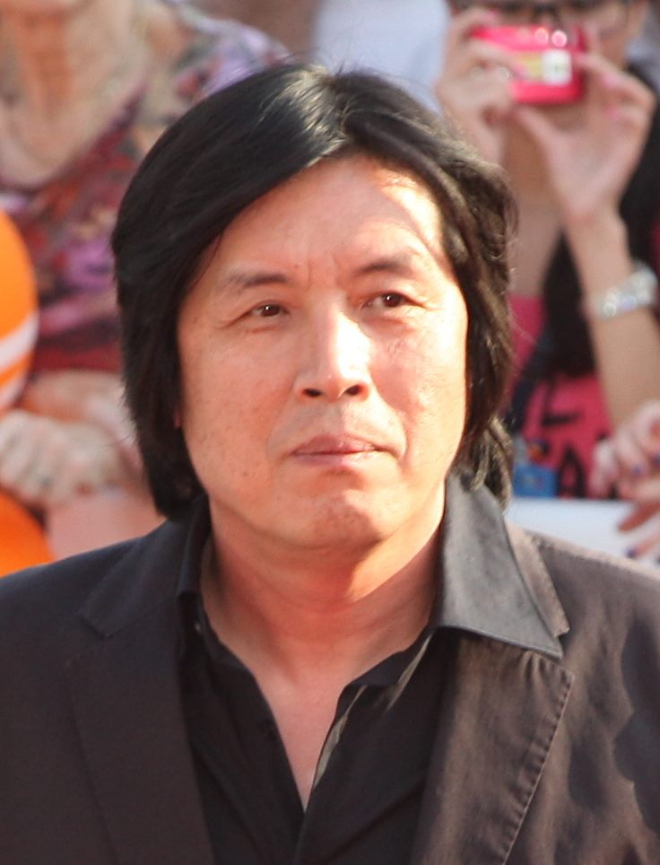

이창동 ‘가능한 사랑’·연상호 ‘실낙원’, 토론토국제영화제 초청
한국 영화감독 이창동과 연상호의 신작이 토론토국제영화제(TIFF)에 초청됐다. 이창동의 ‘가능한 사랑’, 연상호의 ‘실낙원’이 세계 무대에서 관객을 만난다.
방문연 기자 · 2026.07.24
橋경제·문화·스포츠

이창동 감독의 ‘가능한 사랑’과 연상호 감독의 ‘실낙원’이 토론토국제영화제에 초청됐다고 경향신문이 전했다. 한국 영화의 국제적 위상을 다시 확인한 소식이다.
광고 문의 · 300×250토론토국제영화제는 세계 주요 영화제 가운데 하나로, 관객상과 시장 기능으로 잘 알려져 있다. 이곳 초청은 작품의 예술성과 함께 국제 배급·화제성의 발판이 된다.
이창동은 인간의 내면과 삶의 진실을 깊이 파고드는 작품으로, 연상호는 장르적 상상력과 사회적 우화를 결합한 작품으로 각각 국제적 인지도를 쌓아 왔다. 두 감독의 신작 초청은 한국 영화의 폭넓은 스펙트럼을 보여준다.
한국 영화·드라마의 국제적 확산은 콘텐츠 산업의 성장과 맞물려 있다. 개별 작품의 성취가 쌓여 산업 전체의 신뢰와 시장을 넓히는 선순환이 이어지고 있다.
華橋時報는 문화 예술이 국경과 언어를 넘어 공감을 만들어 내는 힘에 주목한다. 좋은 이야기는 특정 국적의 것이 아니라, 그것을 만나는 모든 이의 것이 된다.
출처·참고 (사실 확인용 — 본문은 직접 재작성)
· 경향신문
· 경향신문